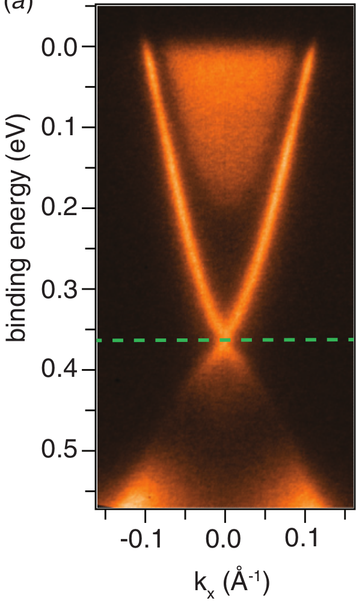

Electronic Band Structure Prediction with Machine Learning
Bart Olsthoorn1, Stanislav Borysov2, Matthias Geilhufe1, Alexander Balatsky1,3,4
- 1 Nordita, KTH Royal Institute of Technology and Stockholm University, Sweden
- 2 DTU Technical University of Denmark, Denmark
- 3 Institute for Materials Science, Los Alamos National Laboratory, USA
- 4 Department of Physics, University of Connecticut, USA
H12.00009, Borysov (Tuesday)
- Electronic structures of more than 25,000 materials
- Non-trivial search tools
- Free to register
Inverse design
$P\rightarrow X$ instead of $X\rightarrow P$
Topological materials
|
|
|

|
|
Figure 1: Experimental detection of Weyl fermions and Fermi arcs [3]. |
Figure 2: ARPES measurements of a topological insulator [4]. |
|
Topological classes in space group 14 [1]
Electronic band structure design
Tight-binding model for space group 14
Kernel Ridge Regression for tight-binding model
Inverse band structure design
Gradient descent applied to KRR maps.
Inverse band structure design

Figure 4: Inducing a crossing along $\Gamma-Y$.
Future
- Band gap prediction with real organic crystal structures and data from DFT calculations.
Summary
- Register for free: omdb.diracmaterials.org
- Electronic band structure prediction (with tight-binding model) with Kernel Ridge Regression (KRR) and using polynomial coefficients instead of eigenvalues.
- Achieve inverse design by applying gradient descent to a Machine Learning map.
- Transform topological class for space group 14.